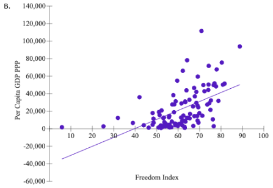

Chapter 3 Excel Activities
Excel-based exercises and answers for Chapter 3.
Excel Assignment Solutions
Excel Activity: Economic Freedom, Prosperity, Happiness, and Food Security
Adam Smith published The Wealth of Nations in 1776 in which he argued that when institutions protect the liberty of individuals, greater prosperity results for all. Since 1995, The Wall Street Journal and The Heritage Foundation have produced the Index of Economic Freedom for all countries in the world. The index is based on a subjective score for a variety of freedoms including government size, freedom from corruption, and property rights. From the CIA Factbook, the per capita gross domestic product (GDP), measured in terms of purchasing power parity (PPP), is used to compare GDP for the selected countries.
Spreadsheet file: The following exercise requires a computer and software for the data file (click here to download)
(a) Construct a scatter chart to see how freedom is related to prosperity. Choose the correct graph.

Correct Answer: Graph B
(b) Briefly describe what the graph informs you.
There is a moderately strong positive linear relationship between the two variables.